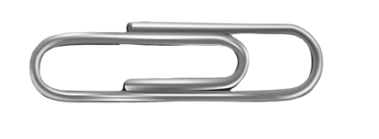
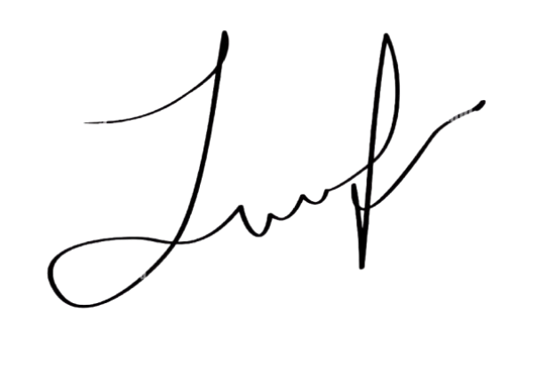

{% extends 'base.html' %}

{% block title %}
Mystify - Update Profile 
{% endblock %}

{% block content %}


<div class="max-w-64 flex flex-col bg-white shadow-xl items-center rounded-xl p-4 gap-4 relative -rotate-12 left-20">

    

    
    <div class="flex items-center justify-between gap-8">
        
        
    </div>
</div>


 


{% endblock %}
